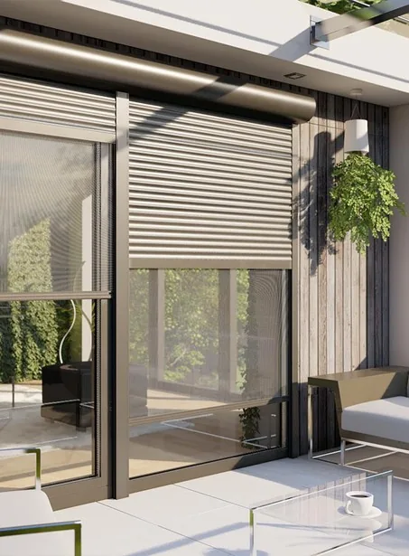
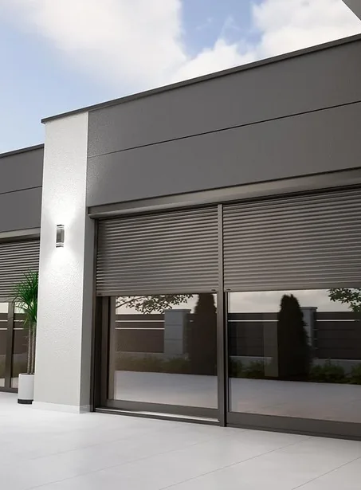

Rollläden für Neubau und Nachrüstung
Wir liefern Rollladensysteme aus PVC und Aluminium in einer breiten Farbpalette. Rollläden verbessern spürbar die Wärme- und Schalldämmung Ihrer Fenster, bieten mechanischen Einbruchschutz und lassen sich bequem elektrisch oder per App steuern.

Aufsatz-, Vorsatz- oder Unterputz-Rollladen?
Wir bieten drei grundlegend unterschiedliche Montagearten an – jede mit eigenen Stärken, je nachdem ob Sie neu bauen oder ein bestehendes Haus nachrüsten möchten. Welches System zu Ihrem Projekt passt, hängt vor allem vom Bauzustand und Ihrem Gestaltungsanspruch ab.
- MaterialPVC oder Aluminium
- Lamellen39 mm, PU-schaumgefüllt
- Farbenüber 200 RAL-Töne
- Garantie2 Jahre Herstellergarantie
Welches System passt zu Ihrem Projekt?
Der wichtigste Unterschied liegt in der Montageart – und damit darin, ob sich ein System eher für den Neubau oder die nachträgliche Sanierung eignet.
Aufsatzrollladen
Wird direkt beim Fenstereinbau montiert und bildet mit dem Fenstersystem eine Einheit. Da kein zusätzlicher Kasten außen aufgesetzt wird, entsteht keine zusätzliche Wärmebrücke – die beste Dämmleistung aller drei Systeme.
- Kastenhöhe215 mm, je nach Fenstersystem
- Kastenhöhe225 mm (übrige Systeme)
- DämmungStyroporkasten optional
Vorsatz-/Vorbaurollladen
Wird nachträglich vor das bestehende Fenster montiert – ohne Eingriff in die Fensterlaibung. Die 45°-Schräge des Aluminiumkastens reduziert die Optik des Kastens und fügt sich dezent in die Fassade ein. Die klassische Nachrüstlösung.
- Kastengrößen137 / 165 / 180 mm
- Montageohne Umbau, an der Fassade
- Materialdurchgehend Aluminium
Unterputz-Rollladen
Der Kasten wird vollständig verputzt und verschwindet unsichtbar in der Fassade – weder von außen noch von innen ist er zu erkennen. Erfordert frühzeitige Planung, da er in die Rohbauphase eingebunden werden muss.
- OptikKasten unsichtbar verputzt
- Planungbereits in der Rohbauphase
- EignungNeubau, Komplettsanierung
Bauen Sie neu und wollen die beste Dämmleistung: Aufsatzrollladen. Sie möchten ein bestehendes Haus nachrüsten, ohne Fenster zu tauschen: Vorsatz-/Vorbaurollladen. Der Kasten soll komplett unsichtbar sein und Sie planen frühzeitig: Unterputz-Rollladen. Wir beraten Sie gerne, welches System für Ihr konkretes Projekt die beste Wahl ist.
Das steckt in jedem Rollladen
Die wichtigsten technischen Merkmale im Überblick – verbindlich festgelegt wird die Konfiguration in Ihrem Angebot.
39 mm Höhe, 9 mm Stärke, PU-schaumgefüllt für beste Dämmung.
Ab der 5. Lamelle für dezenten Tageslichteinfall bei geschlossenem Rollladen.
Ein Fenster mit Uw 0,99 W/(m²K) erreicht bei geschlossenem Rollladen rechnerisch bis zu 0,75 W/(m²K).
Wartungsarm und langlebig bei durchgehender Aluminiumbauweise.
Kasten und Führungsschiene passend zu Fenstern und Fassade.
Ein heruntergelassener Rollladen erschwert Einblick und Zugriff von außen zusätzlich.
Bedienung nach Ihrem Anspruch
Vom klassischen Kurbel- oder Gurtantrieb bis zur vollautomatischen Smart-Home-Steuerung: Sie entscheiden, wie komfortabel Ihre Rollläden bedient werden.
- Antriebmanuell (Kurbel/Gurt) oder elektrisch
- Motormit Hinderniserkennung
- SteuerungSmartphone-/App-fähig
- ErweiterungZeit-/Gruppensteuerung, Alarmanlagen-Kopplung

Insektenschutz gleich mit einplanen
Auf Wunsch wird der Insektenschutz direkt in den Rollladenkasten integriert – innen oder außen am Rollladenpanzer montiert. Bei Nichtgebrauch verschwindet er platzsparend im Kasten, sodass Sie Rollladen und Insektenschutz aus einer Hand und ohne separates Bauteil an der Fassade erhalten. Mehr dazu auf unserer Insektenschutz-Seite.
Was Sie über unsere Rollläden wissen sollten
Messbar viel: Das Institut für Bautechnik in Warschau hat ein Fenster mit einem Uw-Wert von 0,99 W/(m²K) geprüft. Bei heruntergelassenem Rollladen sank der Wert auf 0,75 W/(m²K) – das sind rund 24 % weniger Wärmeverlust an dieser Stelle. Die Luftschicht zwischen Panzer und Scheibe wirkt dabei wie eine zusätzliche Dämmebene.
Der Aufsatzrollladen sitzt direkt auf dem Fensterrahmen und wird zusammen mit dem Fenster eingebaut. Er ist die erste Wahl beim Neubau und immer dann, wenn ohnehin die Fenster getauscht werden. Der Vorsatzrollladen wird außen auf die Fassade montiert, unabhängig vom Fenster – ideal, wenn die Fenster bleiben sollen und nachträglich nachgerüstet wird.
Entscheidend sind Größe und Anzahl der Elemente, der Glasaufbau, die Farbe (weiß ist günstiger als folierte oder lackierte Ausführungen), die Beschlag- und Sicherheitsausstattung sowie die Einbausituation vor Ort. Pauschalpreise aus dem Internet sagen deshalb wenig aus. Wir messen kostenlos auf und erstellen Ihnen ein verbindliches Festpreisangebot inklusive Montage und Entsorgung der Altelemente.
Nur unter bestimmten Bedingungen. Gefördert wird außenliegender Sonnenschutz mit optimierter Tageslichtversorgung – Voraussetzung ist eine automatische Steuerung, etwa über Sensoren, Zeitschaltuhr oder Smart-Home-Anbindung. Ein handbetriebener Rollladen mit Gurtzug erfüllt diese Anforderung nicht. Wird der Rollladen dagegen gemeinsam mit förderfähigen neuen Fenstern eingebaut, zählt er zu den Umfeldmaßnahmen. Wir sagen Ihnen vorab, was in Ihrem Fall gilt.
Ja. Über die Kopplung mit einer externen Alarmanlage lässt sich das Sicherheitsniveau zusätzlich erhöhen – etwa, indem ein gewaltsames Hochschieben des Panzers gemeldet wird.
Moderne Rohrmotoren arbeiten leise; im Nachbarzimmer ist der Lauf in der Regel kaum wahrnehmbar. Entscheidend ist eine saubere Montage: Ein sorgfältig ausgerichteter Panzer läuft ruhiger als einer, der in den Führungsschienen klemmt.
Rollläden für Ihr Projekt anfragen
Ob einzelnes Fenster, ganzes Haus oder Mehrfamilienhaus – wir beraten Sie unverbindlich zum passenden System. Das kostenlose Aufmaß machen wir bei Ihnen vor Ort – im gesamten Großraum Hannover.
Angebot anfragen